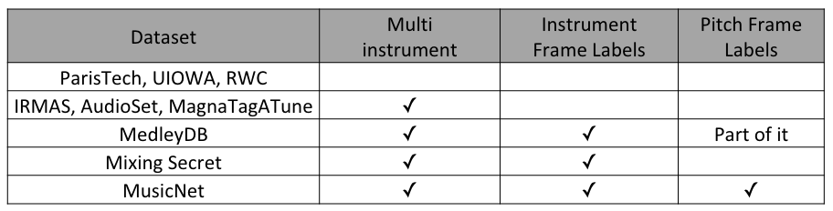
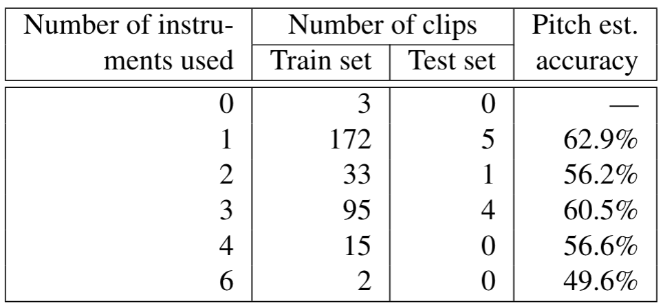
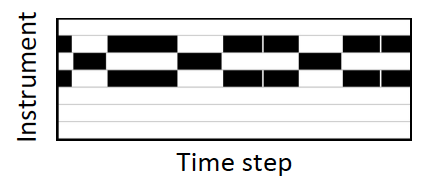

Abstract
Instrument recognition is a fundamental task in music information retrieval, yet little has been done to predict the presence of instruments in multi-instrument music for each time frame. This task is important for not only automatic transcription but also many retrieval problems. In this paper, we use the newly released MusicNet dataset to study this front, by building and evaluating a convolutional neural network for making frame-level instrument prediction. We consider it as a multi-label classification problem for each frame and use frame-level annotations as the supervisory signal in training the network. Moreover, we experiment with different ways to incorporate pitch information to our model, with the premise that doing so informs the model the notes that are active per frame, and also encourages the model to learn relative rates of energy buildup in the harmonic partials of different instruments. Experiments show salient performance improvement over baseline methods. We also report an analysis probing how pitch information helps the instrument prediction task.
MusicNet Dataset
There are lots of instrument related dataset. However, few of them contain instrument frame labels. We chose MusicNet dataset for two reasons. 1) It's larger than other two dataset. 2) It contains pitch ground truth labels.
MusicNet dataset is a collection of 330 freely-licensed classical music recordings with pre-defined 320 recordings for training and 10 recordings for testing. To get the detailed information, please visit MusicNet website. Since pre-defined test set only contains seven instruments, we only include these instruments in our experiment, which are Piano, Violin, Viola, Cello, Clarinet, Bassoon, Horn. Each song is divided into 3 seconds chunks for training efficiency.
Song id used in this experiment can be downloaded here (train/test)Instrument related dataset.
MusicNet dataset statistic.
Model Structure
Two models used in this paper for training frame-level instrument annotations. Left one is adopted from Liu et al. and right one is adapted from Chou et al. We don't modify the temporal dimension during convolusion since we want to preserve the temoral information. The models are trained based on frame-labels supervised learning.
Input Feature
We experiment on four kinds of input features:
Note that pitch source can be ground truth pitch or pitch estimated by estimator (Thickstun et al.)
- CQT: Constant Q transform (CQT) is extracted from input audio with 88 frequency bins (piano notes) and 258 time step
- CQT+Pitch (C): Pitch is concatenated along channel dimension. .
- CQT+Pitch (F): Pitch is concatenated along frequency dimension.
- CQT+HSF: Harmonic series feature (HSF) is concatenated along channel dimension. HSF can be obtained by shifting fundamental frequency (pitch) upward to the harmonic series frequency. The intuition here is that since timbre is related to harmonic distribution, salient the harmonic frequencies can encourage the model to learn the harmonic distribution.
Output Instrument Roll
The output instrument roll is a 2D matrix. X dimension represents the time step while y dimension represent which instruments are active in this time frame.
